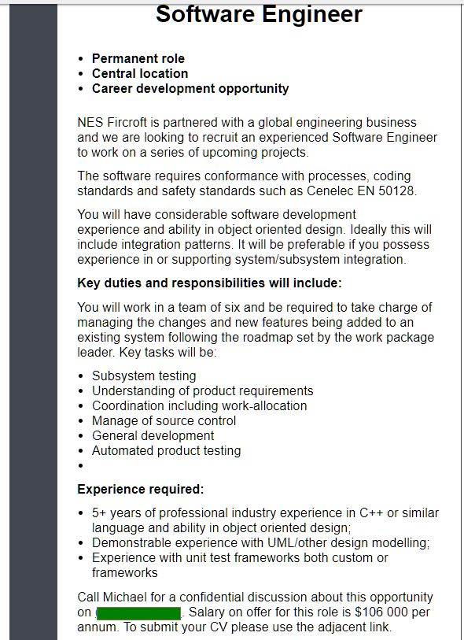

Back to index

IDEAL JOB:
My ideal job would be something in the software engineering space. I would like to problem solve to find new ways of doing things, or making existing processes more efficient. I want to build my experience so I can come up with new solutions.
An example is at https://www.seek.com.au/job/51160872, and is listed on the right.
What is this job?
I read the job as working in a team to improve on an existing piece of software, both in itself and the way that it integrates with other software. Also, it includes quality control such as testing individual parts of the system, and the system as a whole; this would appeal to my problem solving nature, as it is both coming up with improvements and fixing issues. The role also would be good for career development as it would give tangible results that could be used for both the same and future employers.
What does this job require?
This software engineering role naturally requires an ability to program. In terms of practical experience, it requires 5 or more years of experience in a language such as C++ or C#, or another object oriented language. It also requires experience in something called UML, Unified Modelling Language. At this point in time I have no familiarity with what this is, so it is something I would need to explore. Finally, it requires experience with testing, being able to follow certain guides for testing.
What skills/experience do I have?
Currently, I possess about 3 weeks’ worth of learning in an object oriented language, Java. This does unfortunately leave me slightly short of the requirements mentioned in the advertisement.
How will I get the skills I need?
Industry experience will require two things: time, and a job in the industry. To get a job in the industry, I am at this moment performing the action required – obtaining a relevant qualification. I aim to complete my Bachelor of Information Technology, and achieve high enough marks to make me a strong candidate for graduate level jobs.
For experience in UML, I would need to take up the Further Programming subject (Open Universities Australia 2020) which is an elective subject in the Bachelor of Information Technology degree. This would at least get me started with a familiarity which I could then put to use within the industry.
Testing is something that a programmer does constantly, however using specified frameworks is something I have yet to experience. Relevant to the ad, there are frameworks such as Parasoft C/C++test (Parasoft 2020) which I would need to expose myself to, to gain an understanding.
Alasdair Cameron s3884660